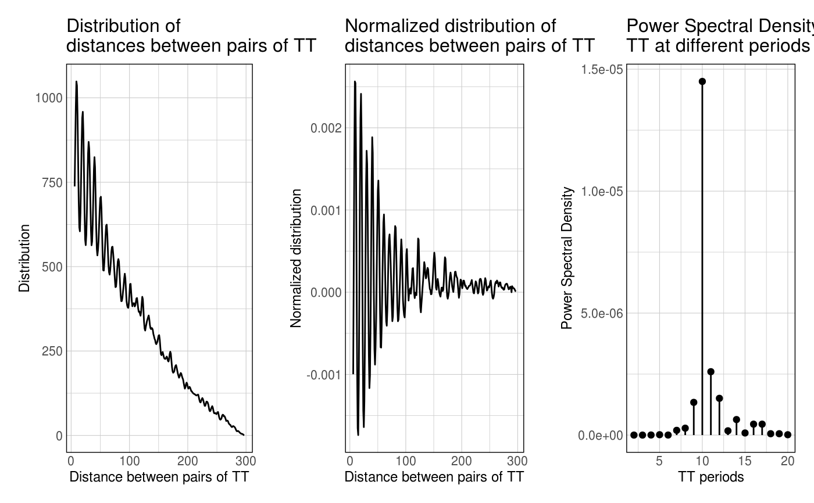
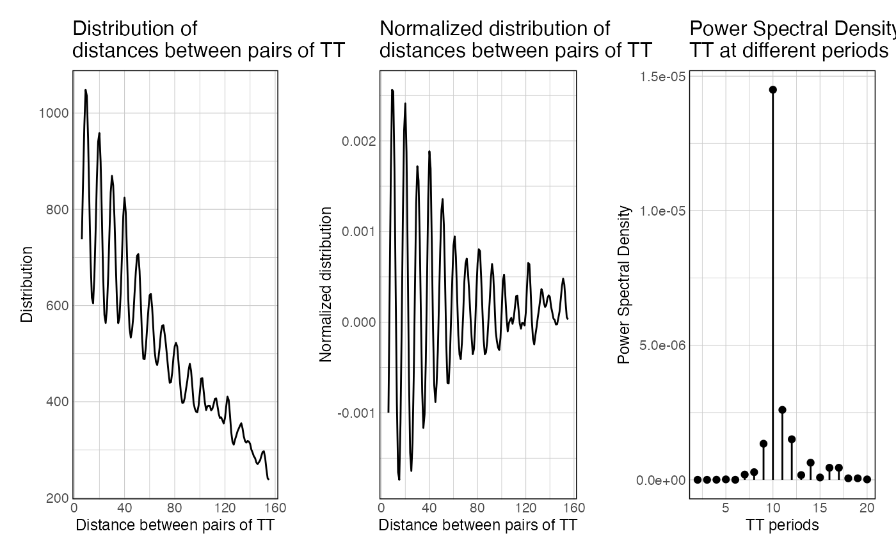
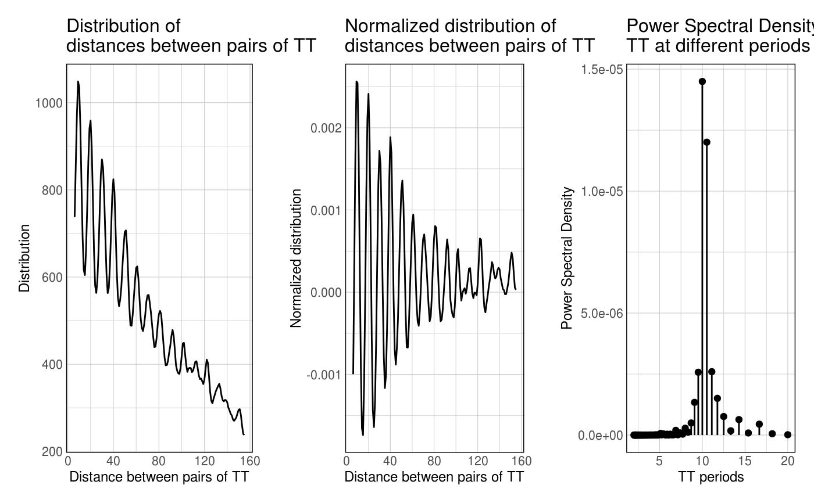
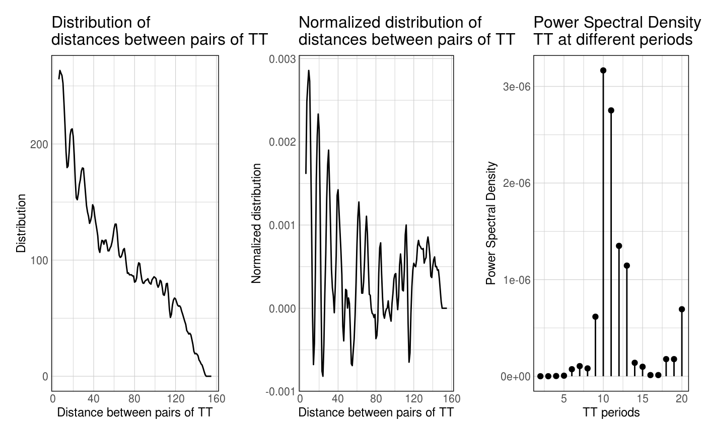

This function plots some results from the result of getPeriodicity(). It plots the raw distogram, the distance-decay normalized distogram and the resulting PSD values. If a shuffled control has been performed by getPeriodicity(), it also displays it.
plotPeriodicityResults( results, periods = c(2, 20), filter_periods = TRUE, facet_control = TRUE, xlim = NULL, fdr_threshold = 0.05, ... )
| results | The output of getPeriodicity function. |
|---|---|
| periods | Vector a numerical vector of length 2, to specify the x-axis limits |
| filter_periods | Boolean Should the x-axis be constrained to the periods? |
| facet_control | Boolean should the shuffling plots be faceted? |
| xlim | Integer x axis upper limit in raw and norm. distograms |
| fdr_threshold | Float, significance threshold |
| ... | Additional theme arguments passed to theme_ggplot2() |
list A list containing four ggplots
data(ce11_TSSs) periodicity_result <- getPeriodicity( ce11_TSSs[['Ubiq.']][1:100], genome = 'ce11', motif = 'TT', BPPARAM = setUpBPPARAM(1) )#>#>#>#>#>#> freq period PSD #> 1 0.005 200.00000 5.283741e-08 #> 2 0.010 100.00000 3.937510e-08 #> 3 0.015 66.66667 4.057825e-08 #> 4 0.020 50.00000 1.233001e-08 #> 5 0.025 40.00000 2.084665e-08 #> 6 0.030 33.33333 7.776985e-08plotPeriodicityResults(periodicity_result)plotPeriodicityResults(periodicity_result, xlim = 150)plotPeriodicityResults( periodicity_result, xlim = 150, filter_periods = FALSE )plotPeriodicityResults( periodicity_result, xlim = 150, facet_control = FALSE )